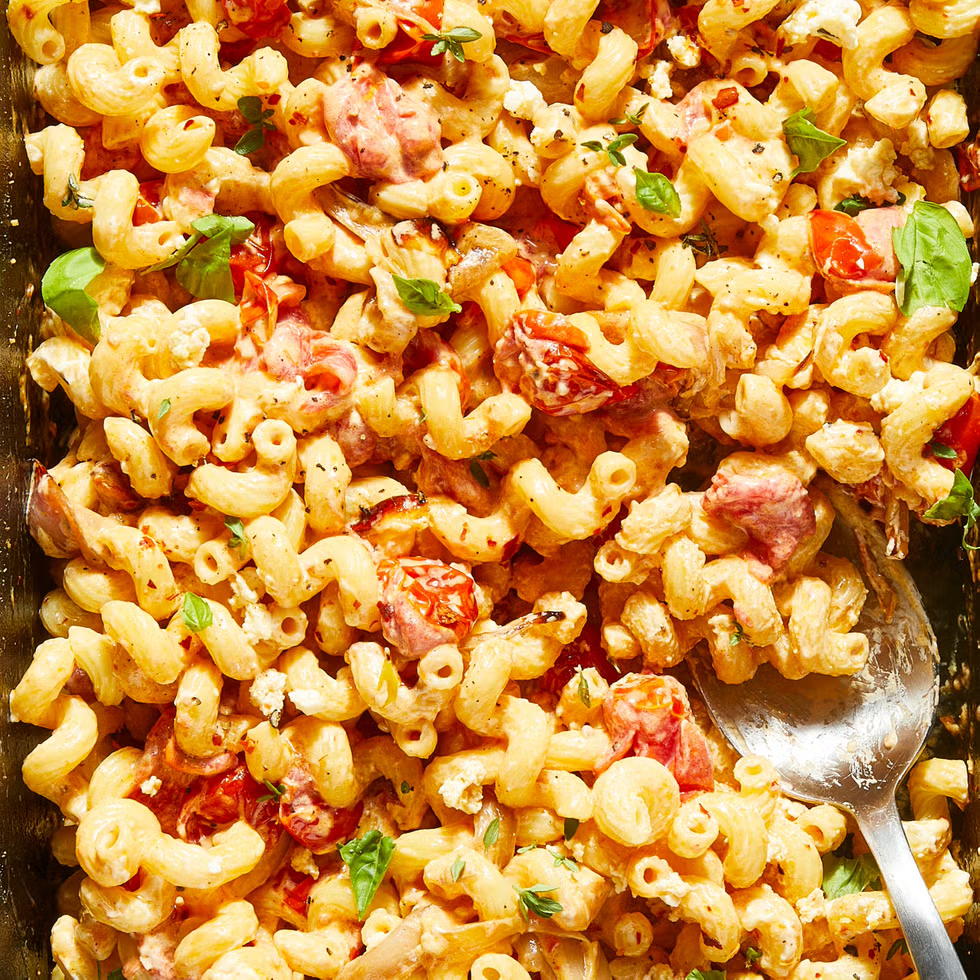

Baked Feta Pasta
An easy, quick and delicious pasta

Ingredients
- 2 pt cherry or grape tomatoes
- 1 shallot, quartered
- 3 cloves of garlic, smashed
- 1/2 cup olive oil
- 8 oz block of feta
- 16 oz protein pasta
- zest of 1 lemon
- fresh basil leaves for serving
Steps
- Preheat oven to 400°. In a medium baking dish, combine tomatoes, shallot, garlic, and all but 1 Tbsp. oil; season with salt and red pepper flakes and toss to combine.
- Place feta into center of tomato mixture and drizzle with reserved 1 Tsp. oil.
- Bake until tomatoes are bursting and feta is golden on top, 40 to 45 minutes.
- Meanwhile, in a large pot of boiling salted water, cook pasta, stirring occasionally, until al dente according to package directions. Reserve 1/2 c. pasta water before draining.
- Add all of the ingredients from the baking dish into a blender with the 1/2c pasta water and blend until smooth.
- Add the sauce, cooked pasta and lemon zest, and stir until combined. Top with basil.
Back to AnneMarie's recipes